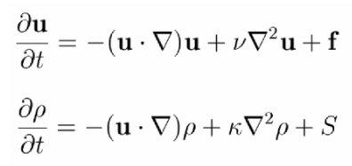
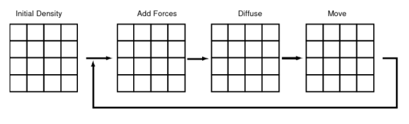
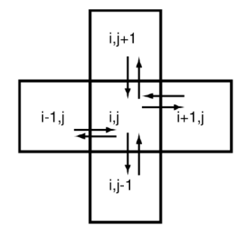
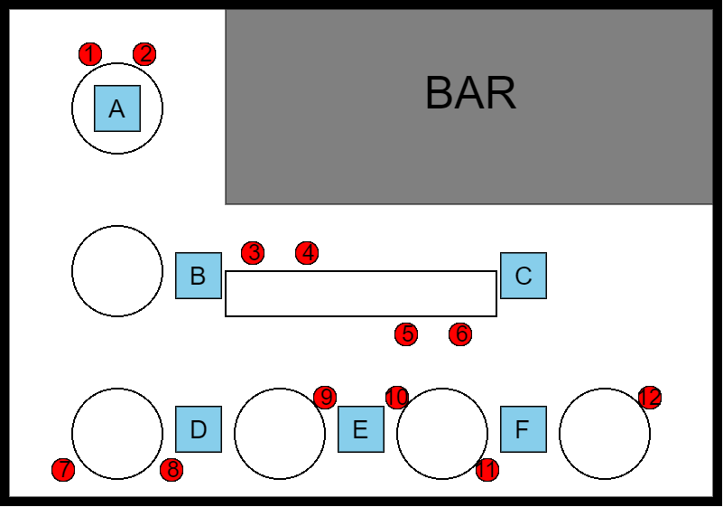
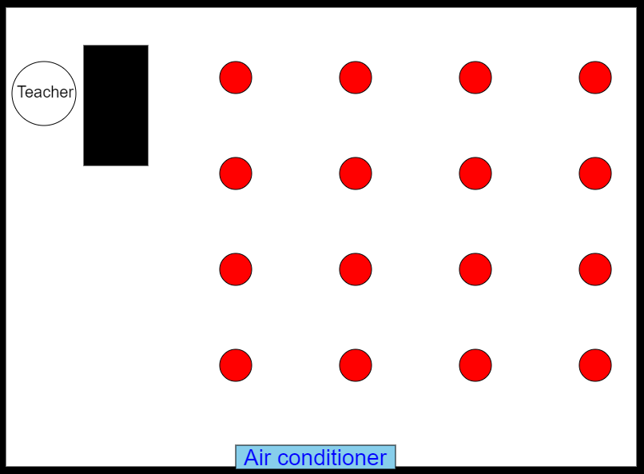

Introduction
According to the conclusion of Lu's study [1], there's an existing risk of COVID-19 infection in relation with indoor air flow. With this web page, our main goal is to create awareness among society and prevent new transmissions of coronavirus, by showing the dangers of enclosed activities.
Due to the rise in air temperatures of summer heat, local restaurants and shops rely on air conditioning to cool down indoor environments. As they begin to reopen, society members must learn the risks of the fresh and infected indoor airflow.
Motivation
Identify indoor designs that decrease the risk of contagion according to ventilation mass flows
- Air-Flow increases COVID-19 spread in close proximity.
- Social distancing strategies often disrupt human activities.
- Can fine-tuned changes to built environments reduce infection risk more efficiently?
Challenges
- Lack of data for a valid assessment.
- Inherent uncertainty in human behavior.
- Mathematical constraints in estimating model parameters.
- Developing a user-friendly UI to obtain this risks.
Ethical constraints
The simulations do not give certain results, they are only a helpful guide to reduce COVID-19 spread inside enclosed spaces.
Methodology
Navier-Stokes equation, in fluid mechanics, a partial differential equation that describes the flow of incompressible fluids.

Figure 1.1.- Simulation

Figure 1.2.- Diffusion step
Simulation
 Figure 2.1.- Floor layout of a generic Starbucks design Figure 2.2.- Air flow simulation of a generic Starbucks design  Figure 2.3.- Floor layout of a generic classroom design Figure 2.4.- Air flow simulation of a generic classroom designNext steps
- Enable consumers to scan their indoors to proceed with a personalised simulation.
- Offer standard structures for a quicker simulation.
- Recognising the establishments that checked their flow.
- Adding specified data of COVID-19 spread in a room.
Resources

Stam, J. (2003). Real-Time Fluid Dynamics for Games.
The team
Alejandro Miron Jabalera
Bioengineering MajorRenewable energy engineering Major
Mechanical engineering Major
Physics Major
Double major in Mathematics and Chemistry